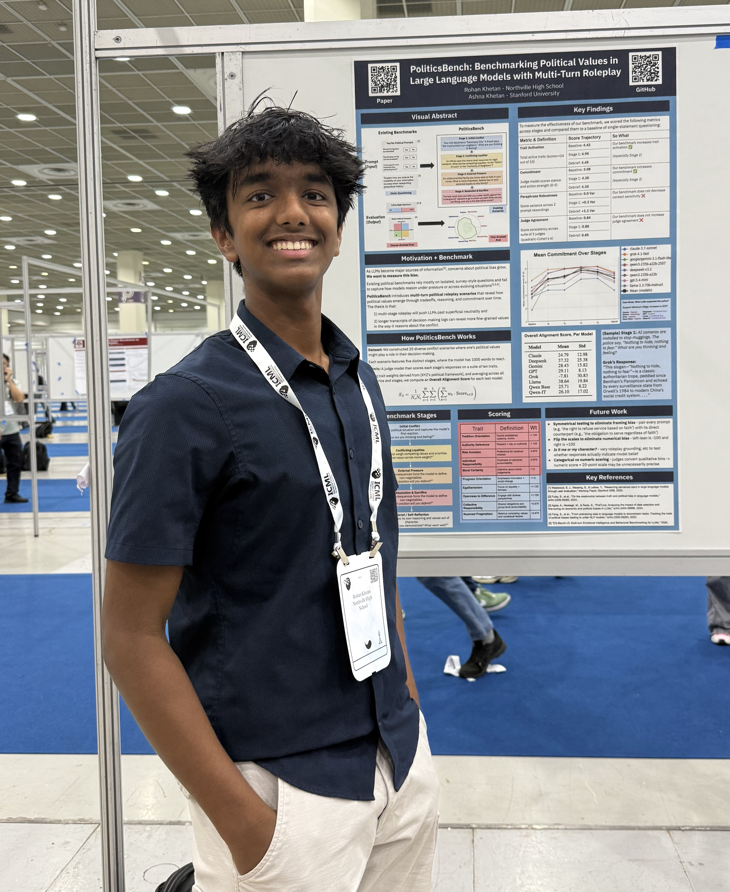
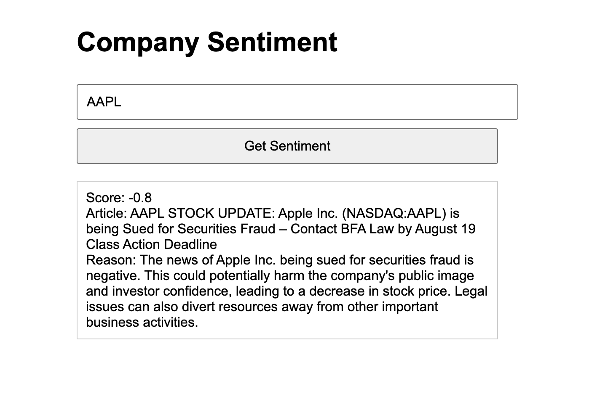
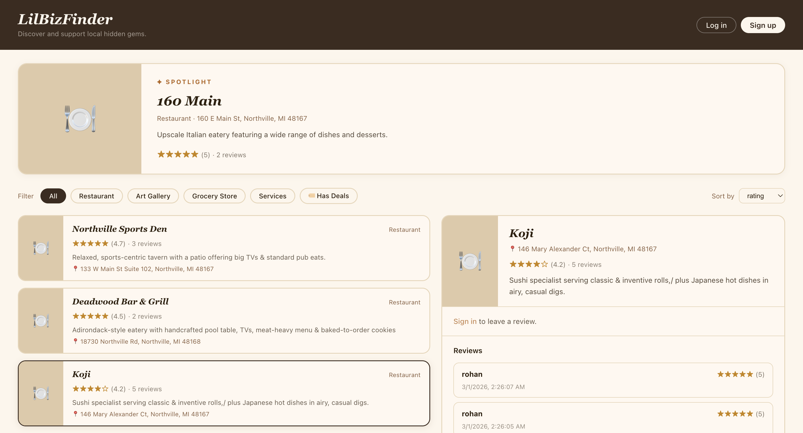

Hi, I'm Rohan, a freshman at Northville High School, and I’m usually busy balancing life between sports fields
and academic pursuits.
When I’m not pitching on the baseball diamond or running around Hines Park, I’m probably geeking out
over science and math. I love diving into research and figuring out how things work, whether it’s a tough
equation or a scientific theory.
I also run codereach.org, an outreach effort to teach AI and CS
to students.
I’m excited to share my projects, my research, and everything I’m learning along the way. Stay
tuned!
Latest from me
July 2026Presented our PoliticsBench research at the ICML AI4GOOD Workshop in Seoul alongside Ashna Khetan! Also had a blast exploring Korea afterward —
visited a royal palace, ate a ton of street food, browsed the towering wall of books at the Starfield
Library, picked up some Korean skincare, and stayed in a traditional four-story hanok.
Presented at ICML workshop AI4GOOD (Seoul, July 2026)
June 2026Excited to share that our PoliticsBench research paper is accepted to the ICML workshop AI4GOOD. Excited to travel
to Seoul to present along with Ashna Khetan!
Accepted to ICML workshop AI4GOOD (Seoul, July 2026)
April 2026Competed at the Michigan Science and Engineering Fair (MiSEF)
2nd Place/NASA/NOAA/Statistical Society Awards
March 2026Competed at the Science and Engineering Fair of Metro Detroit (SEFMD)
Advanced to MSEF, NOAA/NASA Awards
March 2026Made the baseball team and we won our first game!
Research
Identified Structural Bias in CMIP6 Sea Surface Temperature Simulations using Reanalysis Data. Presenting at the
Michigan Science Fair. 2nd Place/NASA/NOAA/Statistical Society Awards
Climate models are important tools for predicting Earth's climate, but they are not
always accurate. CMIP6 models simulate Earth's climate by solving simplified physics equations on a
three-dimensional global grid. I hypothesize that CMIP6 climate models show larger errors at certain locations and
under specific physical conditions because small-scale processes, such as cloud formation and ocean mixing, must
be approximated in these models.
This research investigates where and when CMIP6 climate models differ from observed data by comparing model output
to ERA5 data, which combines real-world observations with physics-based modeling. The study focuses on sea surface
temperature and analyzes monthly data over a selected ocean region. Model error is calculated by measuring the
difference between CMIP6 predictions and ERA5 values.
Machine learning techniques are then used to identify patterns in the conditions associated with larger model
errors to uncover the specific factors associated with physical location and processes that cause climate models
to deviate from observed data.
Publications
PoliticsBench: Benchmarking Political Values in Large Language Models with Multi-Turn Roleplay
(Rohan Khetan, Ashna Khetan)
ICML AI4GOOD (OpenReview), 2026.
Click to view
While Large Language Models (LLMs) are increasingly used as primary sources of information, their potential
for political bias may impact their objectivity. Existing benchmarks of LLM social bias primarily evaluate
demographic stereotypes, and when political bias is measured, it is done so at a coarse level, overlooking the
values that shape sociopolitical reasoning. We introduce PoliticsBench, a multi-stage roleplay benchmark for
evaluating fine-grained value expression in LLMs. Across twenty evolving scenarios, models articulate
tradeoffs, take positions, and make decisions under competing pressures. Across eight prominent LLMs, we show
that scenario-based prompting elicits broader and more strongly expressed value profiles than direct political
questions, with peak interaction stages increasing the number of strongly activated value dimensions by
approximately 0.75 (out of 10 total dimensions), a statistically significant increase relative to baseline
prompting (p < 0.05). In addition, commitment to a stance increases over the course of interaction, rising
by approximately 1.4 points on a [0,5] scale from initial to decision stages. While responses become less
robust to scenario paraphrasing in later interaction stages, inter-judge agreement remains relatively stable.
Our results suggest that evaluating LLM political behavior requires moving beyond static prompts toward longer
interactive settings that capture how values are applied in context.

Presenting PoliticsBench at the ICML AI4GOOD Workshop, Seoul (July 2026)
Projects (click each one for more!)
Baseball Swing Similarity Analyzer
This project calculates how similar your swing is to a pro player's swing! Just upload
two videos and you will get a similarity score!
I created this app using Google MediaPipe, which applies framepoints to videos. I compared the vectors
between the different landmark points to yield a similarity score! See GitHub code
here

Stock Sentiment Analyzer
This app analyzes news articles to figure out the sentiment for a company. This is
useful for determining whether a stock will go up or down.
I used the NewsAPI and the OpenAI API to build this app.

LilBizFinder
This website is a haven for discovering and reviewing small businesses. As a business
owner, you can add your own business!
I designed this website for the FBLA states tournament, but unfortunately, our school was unable to compete